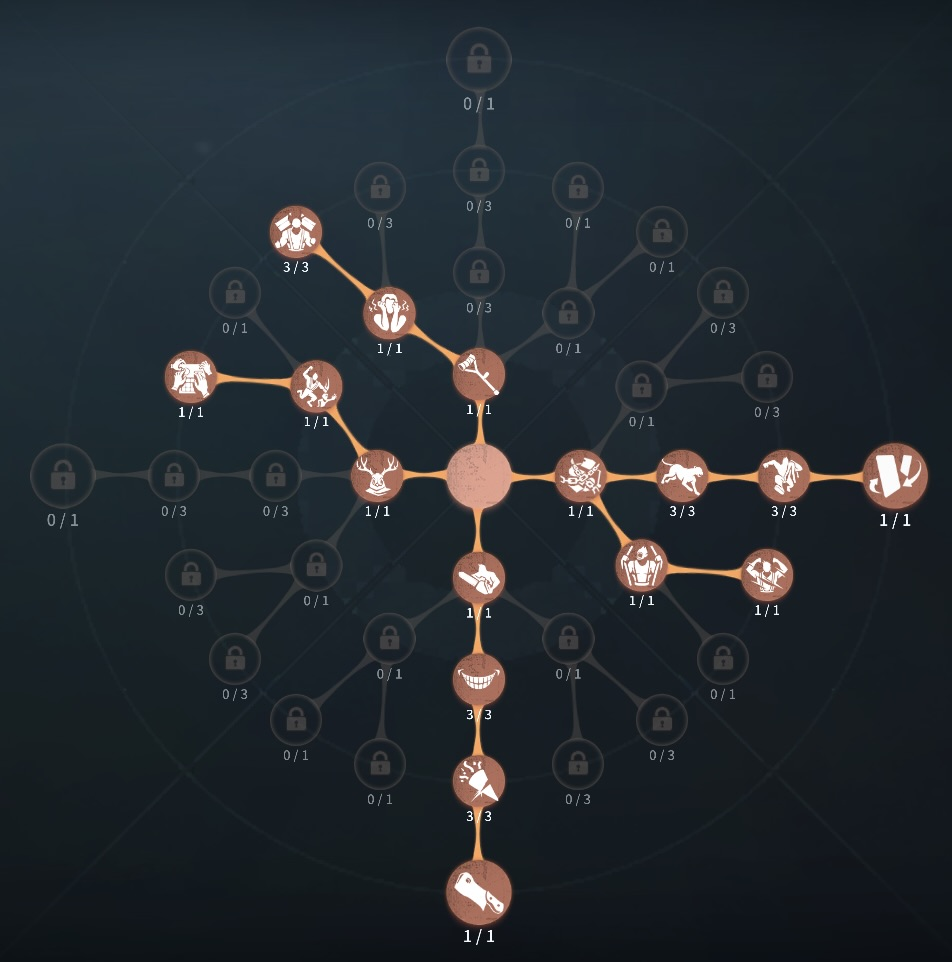
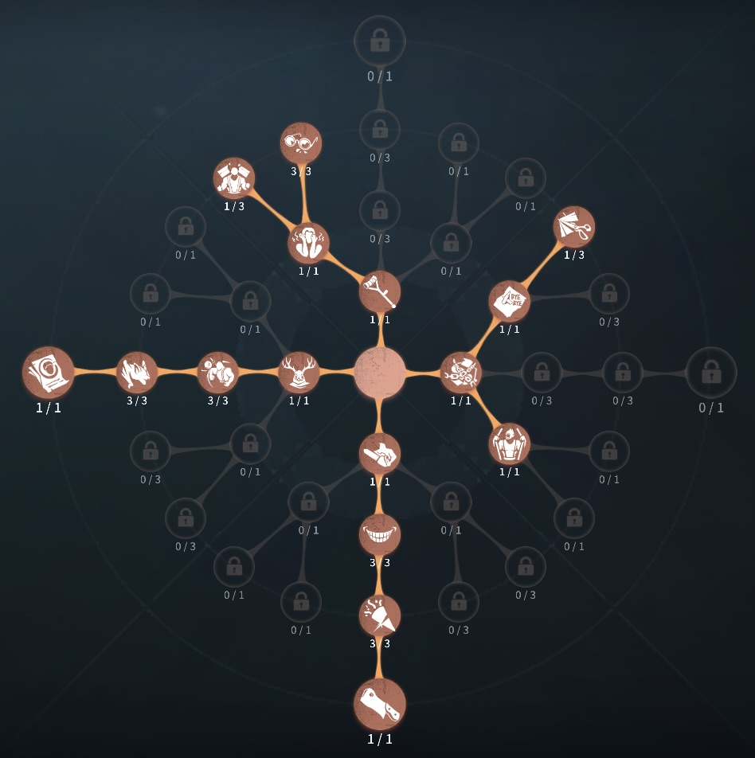

夜の番人（イタカ）の評価
風力で場をかき乱す！
外在特質とスキル
特質1:風行の物
・夜の番人は風域を使用することで風力を1ストック獲得する。ストックしてある風力を消費することで風行スキルを発動できる。ストックは最大3つまでストックできる。存在感0：風域、風行
・風域:最大5秒間自身から一定範囲内のサバイバーを一定の間、引き寄せる。途中で風域を中断することもできる。風域を2秒以上展開すると風力を1ストック獲得できる。
・風行:
風力を1消費し、5秒間移動速度上昇し、倒れている板、窓を素早く乗り越えることができる。移動速度は徐々に減少していく。
存在感1：風域-捕食、風行-遠距離強襲、風域制御
・風域-捕食:自身から一定範囲内のサバイバーを強制的に引き寄せる。風力を1ストック獲得獲得できる。
・風行-遠距離強襲:
風力を1消費し、前方に17.5mダッシュする。オブジェクトなど障害物に衝突するとダッシュは止まる
・風域制御:
風域と風行のスキルを切り替えることができる。
存在感2：風の眷属
・ストック出来る風力の上限が４になり、風域で獲得できる風力が2になる。ハンターの立ち回り方
1. 初動の立ち回り
イタカは「風域」と「風行」を駆使してチェイスを制圧するタイプのハンター。試合開始時に
「風域」を発動し、風力をストック
しておくことで、ファーストチェイスをスムーズに進めやすくなる。
・「風域」を開幕で使用し、風力を溜める:
✅
開幕に風域を2秒以上展開して風力を1ストック確保してから索敵に向かう。風力がない状態のイタカは通常攻撃しかできない最弱状態なので、接敵前にストックを作っておくことで、ファーストチェイスの初手(風行での距離詰め)にスムーズに繋げられる。
・風力の活用:
✅風力のストックを活かすため、
スポーン位置を把握して効率よく接敵
する。追いにくいサバイバーであれば、無理に粘らず早めに
タゲチェン するのも選択肢。板窓を活用するサバイバーに注意
・風力の注意点:
✅板窓操作のバフはあるが 無限に使用できるわけではない
ため、乱用は禁物。強ポジの板は無理に越えず、
倒された場合は即座に破壊する判断も重要。
2. スキルの使い方
イタカのスキルは使用時は強力だが、使えない時間は極端に弱くなる。そのため風力の管理が最重要となる。
・風域（スキル1）:
・開幕時に使用し、風力をストックする
のが基本。通電間際にも温存しておくと、ラストチェイスで有利に動ける。救助狩りでは
「風域-捕食」 による引き寄せが重要な役割を果たす。
・風行（スキル2）:
・チェイスでは 距離を詰める手段 として使用。板窓の間に合わせや
遠距離から一気に急襲する際
に活用すると効果的。通電後のラストチェイスで「風行-遠距離強襲」による奇襲
も狙える。
3. チェイス中の立ち回り
イタカのチェイスは、
風力を管理しながら攻撃のタイミングを見極めることが重要。スキルを無駄遣いせず、
必要な場面で確実に活かすことを意識しよう。
・「風域」を発動して風力を確保しながらチェイスを行う:
風力がないと 通常攻撃のみの最弱状態
になってしまうため、チェイス中の使用回数を考えて管理する。板窓の読み合いでは「風行」を活用する
・板・窓周りの対応:
強ポジの窓枠は
風行を使って素早く乗り越えるか、無理ならすぐにタゲチェン。
「風域-捕食」で引き寄せてから攻撃する。板窓越しに引き寄せることで、強ポジのグルチェを防ぐ。ただし
風力がないと何もできなくなるため、適切なタイミングで使用する。
4. 救助狩りの立ち回り
イタカは
瞬間的な攻撃力は高くないため、救助狩りには工夫が必要。
・「風域-捕食」で中距離からプレッシャーをかける:
・救助前に
風域で引き寄せ、救助を妨害する。5割・9割超えを狙うなら、あえて攻撃を遅らせることも選択肢。
・地下吊りを利用する:
・階段前まで「風域-捕食」でサバイバーを引き寄せ、連続攻撃を狙う。地下救助はイタカのスキルと相性が良いため、積極的に狙う。
5. 注意点
イタカを使う際には、以下の点に注意しましょう。
🔹 風力の無駄遣いは致命的
→ 風力が尽きると チェイスが一気に崩壊する ため、
使用回数を管理することが重要。
予備の風力を確保しておくことで、チェイスが安定しやすくなる。
「風域」と「風行」のクールタイムを意識する
🔹 誤タップに注意
→ 板破壊と板乗り越えのボタンが近いため、
乗り越えるつもりが誤って破壊してしまうミスに注意。窓枠の乗り越えボタンを意識して操作
すると、誤タップのリスクが減る。
おすすめの内在人格
裏向きカード型人格
この内在人格は、怒りと中毒症で粘着を攻略し、幽閉の恐怖でゲート守りを可能にした人格

傲慢型人格
この内在人格は、狂暴で椅子付近攻撃後、捕食でとらえ救助狩りを狙うor救助後にDDを狙う人格


みんなのコメント